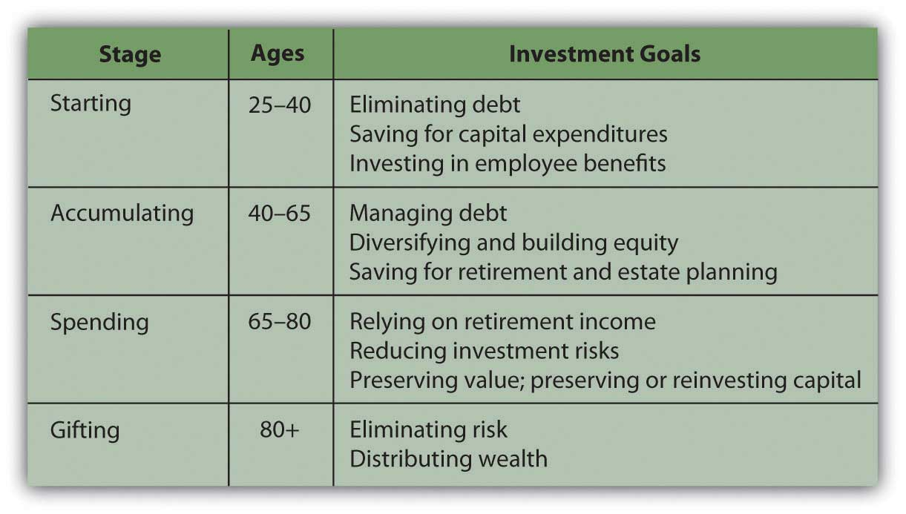
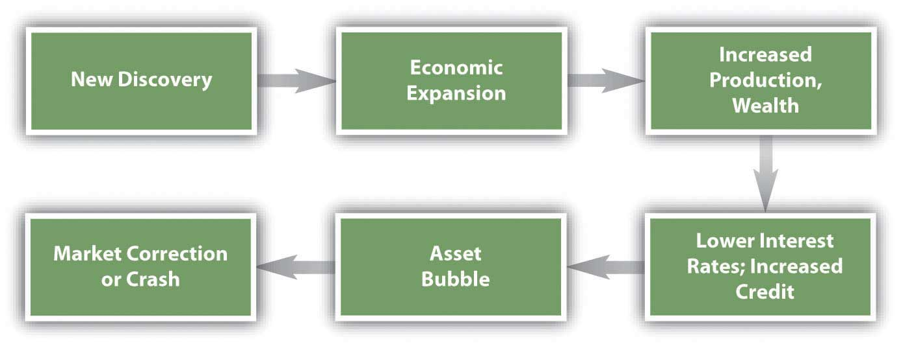
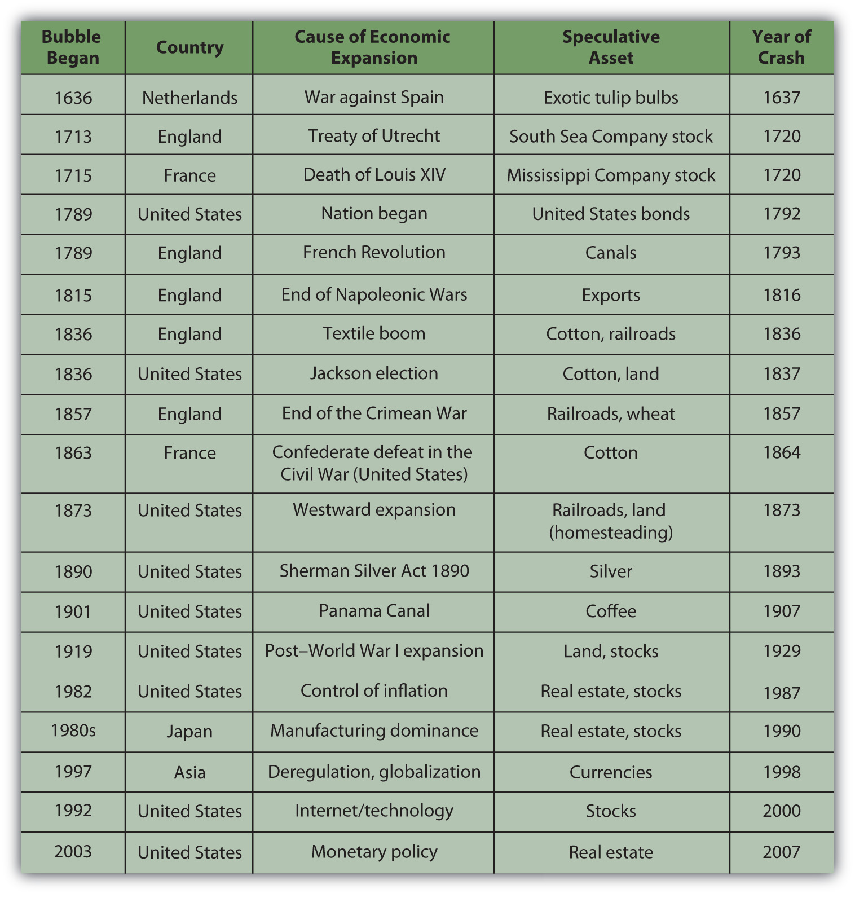
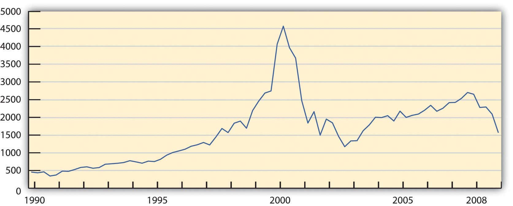
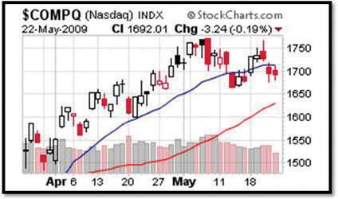

Much of what is known about finance and investments has come from the study of economics. Classic economics assumes that people are rational when they make economic or financial decisions. “Rational” means that people respond to incentives because their goal is always to maximize benefit and minimize costs. Not everyone shares the same idea of benefit and cost, but in a market with millions of participants, there tends to be some general consensus.
This belief in rationality leads to the idea of market efficiencyThe idea that the market works best when prices reflect all available information, implying that the market price represents an unbiased estimate with an equal chance that stocks are over- or undervalued.. In an efficient market, prices reflect “fundamental value” as appraised by rational decision makers who have access to information and are free to choose to buy or sell as their rational decisions dictate. The belief in efficiency assumes that when prices do not reflect real value, people will notice and will act on the anomaly with the result that the market “corrects” that price.
People are not always rational, however, and markets are not always efficient. Behavioral financeThe study of how cognitive and emotional factors affect economic decisions, particularly how they affect rationality in decision making. is the study of why individuals do not always make the decisions they are expected to make and why markets do not reliably behave as they are expected to behave. As market participants, individuals are affected by others’ behavior, which collectively affects market behavior, which in turn affects all the participants in the market.
As an individual, you participate in the capital markets and are vulnerable to the individual and market behaviors that influence the outcomes of your decisions. The more you understand and anticipate those behaviors, the better your financial decision making may be.
Rational thinking can lead to irrational decisions in a misperceived or misunderstood context. In addition, biases can cause people to emphasize or discount information or can lead to too strong an attachment to an idea or an inability to recognize an opportunity. The context in which you see a decision, the mental frame you give it (i.e., the kind of decision you determine it to be) can also inhibit your otherwise objective view.Much research has been done in the field of behavioral finance over the past thirty years. A comprehensive text for further reading is by Hersh Shefrin, Beyond Greed and Fear: Behavioral Finance and the Psychology of Investing (Oxford: Oxford University Press, 2002). Learning to recognize your behaviors and habits of mind that act as impediments to objective decision making may help you to overcome them.
One kind of investor behavior that leads to unexpected decisions is biasA tendency or preference or belief that interferes with objectivity., a predisposition to a view that inhibits objective thinking. Biases that can affect investment decisions are the following:
Availability biasIn finance, an investor’s tendency to base the probability of an event on the availability of information. occurs because investors rely on information to make informed decisions, but not all information is readily available. Investors tend to give more weight to more available information and to discount information that is brought to their attention less often. The stocks of corporations that get good press, for example, claim to do better than those of less publicized companies when in reality these “high-profile” companies may actually have worse earnings and return potential.
RepresentativenessThe practice of stereotyping asset performance, or of assuming commonality of disparate assets based on superficial, stereotypical traits. is decision making based on stereotypes, characterizations that are treated as “representative” of all members of a group. In investing, representativeness is a tendency to be more optimistic about investments that have performed well lately and more pessimistic about investments that have performed poorly. In your mind you stereotype the immediate past performance of investments as “strong” or “weak.” This representation then makes it hard to think of them in any other way or to analyze their potential. As a result, you may put too much emphasis on past performance and not enough on future prospects.
Objective investment decisions involve forming expectations about what will happen, making educated guesses by gathering as much information as possible and making as good use of it as possible. OverconfidenceA bias in which you have too much faith in the precision of your estimates, causing you to underestimate the range of possibilities that actually exist. is a bias in which you have too much faith in the precision of your estimates, causing you to underestimate the range of possibilities that actually exist. You may underestimate the extent of possible losses, for example, and therefore underestimate investment risks.
Overconfidence also comes from the tendency to attribute good results to good investor decisions and bad results to bad luck or bad markets.
AnchoringA bias in which the investor relies too heavily on limited known factors or points of reference. happens when you cannot integrate new information into your thinking because you are too “anchored” to your existing views. You do not give new information its due, especially if it contradicts your previous views. By devaluing new information, you tend to underreact to changes or news and become less likely to act, even when it is in your interest.
Ambiguity aversionA preference for known risks over unknown risks. is the tendency to prefer the familiar to the unfamiliar or the known to the unknown. Avoiding ambiguity can lead to discounting opportunities with greater uncertainty in favor of “sure things.” In that case, your bias against uncertainty may create an opportunity cost for your portfolio. Availability bias and ambiguity aversion can also result in a failure to diversify, as investors tend to “stick with what they know.” For example, in a study of defined contribution retirement accounts or 401(k)s, more than 35 percent of employees had more than 30 percent of their account invested in the employing company’s stock, and 23 percent had more than 50 percent of their retirement account invested in their employer’s stockS. Holden and J. VanDerhei, “401(k) Plan Asset Allocation, Account Balances, and Loan Activity in 2002,” EBRI Issue Brief 261 (2003).—hardly a well-diversified asset allocation.
FramingThe idea that the presentation or perception of a decision influences the deicision maker. refers to the way you see alternatives and define the context in which you are making a decision.A. Tversky and D. Kahneman, “The Framing Decisions and the Psychology of Choice,” Science 30, no. 211 (1981): 453–58. Your framing determines how you imagine the problem, its possible solutions, and its connection with other situations. A concept related to framing is mental accountingA preference to segregate investment accounts by goals and constraints, rather than to perceive the entire portfolio as a whole.: the way individuals encode, describe, and assess economic outcomes when they make financial decisions.R. Thaler, "Mental Accounting Matters," Journal of Behavioral Decision Making 12, no. 3 (1999): 183–206. In financial behavior, framing can lead to shortsighted views, narrow-minded assumptions, and restricted choices.
Every rational economic decision maker would prefer to avoid a loss, to have benefits be greater than costs, to reduce risk, and to have investments gain value. Loss aversionAn investor’s preference to avoid losses, even when the costs outweigh the benefits, in which case it is not the rational economic choice. refers to the tendency to loathe realizing a loss to the extent that you avoid it even when it is the better choice.
How can it be rational for a loss to be the better choice? Say you buy stock for $100 per share. Six months later, the stock price has fallen to $63 per share. You decide not to sell the stock to avoid realizing the loss. If there is another stock with better earnings potential, however, your decision creates an opportunity cost. You pass up the better chance to increase value in the hopes that your original value will be regained. Your opportunity cost likely will be greater than the benefit of holding your stock, but you will do anything to avoid that loss. Loss aversion is an instance where a rational aversion leads you to underestimate a real cost, leading you to choose the lesser alternative.
Loss aversion is also a form of regret aversion. Regret is a feeling of responsibility for loss or disappointment. Past decisions and their outcomes inform your current decisions, but regret can bias your decision making. Regret can anchor you too firmly in past experience and hinder you from seeing new circumstances. Framing can affect your risk tolerance. You may be more willing to take risk to avoid a loss if you are loss averse, for example, or you may simply become unwilling to assume risk, depending on how you define the context.
Framing also influences how you manage making more than one decision simultaneously. If presented with multiple but separate choices, most people tend to decide on each separately, mentally segregating each decision.Hersh Shefrin, Beyond Greed and Fear: Understanding Financial Behavior and the Psychology of Investing (Oxford: Oxford University Press, 2002). By framing choices as separate and unrelated, however, you may miss making the best decisions, which may involve comparing or combining choices. Lack of diversification or overdiversification in a portfolio may also result.
An investor profileA combination of characteristics based on personality traits, life stage, and sources of wealth. expresses a combination of characteristics based on personality traits, life stage, sources of wealth, and other factors. What is your investor profile? The better you can know yourself as an investor, the better investment decisions you can make.
Researchers have identified some features or characteristics of investors that seem to lead to recognizable tendencies.A reference for this discussion is John L. Maginn, Donald L. Tuttle, Jerald E. Pinto, and Dennis W. McLeavey, eds., Managing Investment Portfolios: A Dynamic Process, 3rd ed. (Hoboken, NJ: John Wiley & Sons, Inc., 2007). For example, stages of life have an effect on goals, views, and decisions, as shown in the examples in Figure 13.2 "Life Stage Profiles".
Figure 13.2 Life Stage Profiles
These “definitions” are fairly loose yet typical enough to think about. In each of these stages, your goals and your risk tolerance—both your ability and willingness to assume risk—change. Generally, the further you are from retirement and the loss of your wage income, the more risk you will take with your investments, having another source of income (your paycheck). As you get closer to retirement, you become more concerned with preserving your investment’s value so that it can generate income when it becomes your sole source of income in retirement, thus causing you to become less risk tolerant. After retirement, your risk tolerance decreases even more, until the very end of your life when you are concerned with dispersing rather than preserving your wealth.
Risk tolerance and investment approaches are affected by more than age and investment stage, however. Studies have shown that the source and amount of wealth can be a factor in attitudes toward investment.John L. Maginn, Donald L. Tuttle, Jerald E. Pinto, and Dennis W. McLeavey, eds., Managing Investment Portfolios: A Dynamic Process, 3rd ed. (Hoboken, NJ: John Wiley & Sons, Inc., 2007).
Those who have inherited wealth or come to it “passively,” tend to be much more risk averse than those who have “actively” created their own wealth. Entrepreneurs, for example, who have created wealth, tend to be much more willing to assume investment risk, perhaps because they have more confidence in their ability to create more wealth should their investments lose value. Those who have inherited wealth tend to be much more risk averse, as they see their wealth as a windfall that, once lost, they cannot replace.
Active wealth owners also tend to be more active investors, more involved in investment decisions and more knowledgeable about their investment portfolios. They have more confidence in their ability to manage and to make good decisions than do passive wealth owners, who haven’t had the experience to build confidence.
Not surprisingly, those with more wealth to invest tend to be more willing to assume risk. The same loss of value is a smaller proportional loss for them than for an investor with a smaller asset base.
Many personality traits bear on investment behavior, including whether you generally are
What makes you make the decisions that you make? The more aware you are of the influences on your decisions, the more you can factor them in—or out—of the investment process.
Biases that can affect investment decisions are the following:
Framing refers to the way you see alternatives and define the context in which you are making a decision. Examples of framing errors include the following:
Investor profiles are influenced by the investor’s
Your economic behaviors affect economic markets. Market results reflect the collective yet independent decisions of millions of individuals. There have been years, even decades, when some markets have not produced expected or “rational” prices because of the collective behavior of their participants. In inefficient markets, prices may go way above or below actual value.
The efficient market theoryThe idea that the market works best when prices reflect all available information, implying that the market price represents an unbiased estimate with an equal chance that stocks are over- or undervalued. relies on the idea that investors behave rationally and that even when they don’t, their numbers are so great and their behavioral biases are so diverse that their irrational behaviors will have little overall effect on the market. In effect, investors’ anomalous behaviors will cancel each other out. Thus, diversification (of participants) lowers risk (to the market).
Another protection of market efficiency is the tendency for most participants to behave rationally. If an asset is mispriced so that its market price deviates from its intrinsic value, knowledgeable investors will see that and take advantage of the opportunity. If a stock seems underpriced they will buy, driving prices back up. If a stock seems overpriced, they will sell, driving prices back down. These strategies are called arbitrageTrading that profits from the market mispricing of assets in the capital markets., or the process of creating investment gains from market mispricings (arbitrage opportunitiesA market mispricing that provides an opportunity for unusual gain or loss.). The knowledgeable investors who carry out market corrections through their investment decisions are called arbitrageursTraders who seek arbitrage opportunities..
There are limits to arbitrage, however. There are times when the stock markets seem to rise or fall much more or for much longer than the dynamics of market correction would predict.
Arbitrage may not work when the costs outweigh the benefits. Investment costs include transaction costs, such as brokers’ fees, and risk, especially market risk.
An investor who sees an arbitrage opportunity would have to act quickly to take advantage of it, because chances are good that someone else will and the advantage will disappear along with the arbitrage opportunity. Acting quickly may involve borrowing if liquid funds are not available to invest. For this reason, transaction costs for arbitrage trades are likely to be higher (because they are likely to include interest), and if the costs are higher than the benefits, the market will not be corrected.
The risk of arbitrage is that the investor rather than the market is mispricing stocks. In other words, arbitrageurs assume that the current valuation for an asset will reverse—will go down if the valuation has gone too high, or will go up if the valuation has gone too low. If their analysis of fundamental value is incorrect, the market correction may not occur as predicted, and neither will their gains.
Most arbitrageurs are professional wealth managers. They invest for very wealthy clients with a large asset base and very high tolerance for risk. Arbitrage is usually not a sound practice for individual investors.
Market inefficiencies can persist when they go undiscovered or when they seem rational. Economic historians point out that while every asset “bubble” is in some ways unique, there are common economic factors at work.Charles P. Kindleberger and Robert Aliber, Manias, Panics, and Crashes, 5th ed. (Hoboken, NJ: John Wiley & Sons, Inc., 2005). Bubbles are accompanied by lower interest rates, increased use of debt financing, new technology, and a decrease in government regulation or oversight. Those factors encourage economic expansion, leading to growth of earnings potential and thus of investment return, which would make assets genuinely more valuable.
A key study of the U.S. stock market points out that there are cultural as well as economic factors that can encourage or validate market inefficiency.Robert J. Shiller, Irrational Exuberance, 2nd ed. (New York: Random House, Inc., 2005). Examples include
These factors all lead to increased participation in the market and a tendency to “rationalize irrationality,” that is, to think that real economic or cultural changes, rather than mispricings, are changing the markets.
Sometimes mispricings occur when real economic and cultural changes are happening, however, so that what used to be seen a mispricing is actually seen as justifiable, fundamental value because the market itself has changed profoundly. An example is the dotcom bubble of 1990–2000, when stock prices of Internet start-up companies rose far higher than their value or earning capacity. Yet investors irrationally kept investing until the first wave of start-ups failed, bursting the market bubble.
Economic and cultural factors can prolong market inefficiency by reinforcing the behaviors that created it, in a kind of feedback loop. For example, financial news coverage in the media increased during the 1990s with the global saturation of cable and satellite television and radio, as well as the growth of the Internet.Robert J. Shiller, Irrational Exuberance, 2nd ed. (New York: Random House, Inc., 2005). More information availability can lead to more availability bias. Stereotyping can develop as a result of repeated “news,” resulting in representation bias, which encourages overconfidence or too little questioning or analysis of the situation. Misinterpreting market inefficiency as real changes can cause framing problems and other biases as well.
In this way, market inefficiencies can become self-fulfilling prophecies. Investing in an inefficient market causes asset values to rise, leading to gains and to more investments. The rise in asset values becomes self-reinforcing as it encourages anchoring, the expectation that asset values will continue to rise. Inefficiency becomes the norm. Those who do not invest in this market thus incur an opportunity cost. Participating in perpetuating market inefficiency, rather than correcting it, becomes the rational choice.
Reliance on media experts and informal communication or “word of mouth” reinforces this behavior to the point where it can become epidemic. It may not be mere coincidence, for example, that the stock market bubble of the 1920s happened as radio and telephone access became universal in the United States,See especially Robert J. Shiller, Irrational Exuberance, 2nd ed. (New York: Random House, Inc., 2005), 163. or that the stock boom of the 1990s coincided with the proliferation of mobile phones and e-mail, or that the real estate bubble of the 2000s coincided with our creation of the blogosphere.
Market efficiency requires that investors act independently so that the market reflects the consensus opinion of their independent judgments. Instead, the market may be reflecting the opinions of a few to whom others defer. Although the volume of market participation would seem to show lots of participation, few are actually participating. Most are simply following. The market then reflects the consensus of the few rather than the many; hence, the probability of mispricing rises.
It is difficult to know what is happening while you are in the middle of an inefficient market situation. It is easier to look back through market history and point out obvious panics or bubbles, but they were not so obvious to participants while they were happening. Hindsight allows a different perspective—it changes the frame—but as events happen, you can only work with the frame you have at the time.
Arbitrage is not always possible, due to
Market inefficiencies can persist due to economic and cultural factors such as
Economic forces and financial behavior can converge to create extreme markets or financial crises, such as booms, bubbles, panics, crashes, or meltdowns. These atypical events actually happen fairly frequently. Between 1618 and 1998, there were thirty-eight financial crises globally, or one every ten years.Charles P. Kindleberger and Robert Aliber, Manias, Panics, and Crashes, 5th ed. (Hoboken, NJ: John Wiley & Sons, Inc., 2005). As an investor, you can expect to weather as many as six crises in your lifetime.
Patterns of events that seem to precipitate and follow the crises are shown in Figure 13.7 "Pattern of a Financial Crisis". First a period of economic expansion is sparked by a new technology, the discovery of a new resource, or a change in political balances. This leads to increased production, markets, wealth, consumption, and investment, as well as increased credit and lower interest rates. People are looking for ways to invest their newfound wealth. This leads to an asset bubble, a rapid increase in the price of some asset: bonds, stocks, real estate, or commodities such as cotton, gold, oil, or tulip bulbs that seems to be positioned to prosper from this particular expansion.
Figure 13.7 Pattern of a Financial Crisis
The bubble continues, reinforced by the behavioral and market consequences that it sparks until some event pricks the bubble. Then asset values quickly deflate, and credit defaults rise, damaging the banking system. Having lost wealth and access to credit, people rein in their demand for consumption and investment, further slowing the economy.
Figure 13.8 "Major Asset Bubbles Since 1636" shows some of the major asset bubbles since 1636 and the events that preceded them.Charles P. Kindleberger and Robert Aliber, Manias, Panics, and Crashes, 5th ed. (Hoboken, NJ: John Wiley & Sons, Inc., 2005).
Figure 13.8 Major Asset Bubbles Since 1636
In many cases, the event that started the asset speculation was not a macroeconomic event but nevertheless had consequences to the economy: the end of a war, a change of government, a change in policy, or a new technology. Often the asset that was the object of speculation was a resource for or an application of a new technology or an expansion into new territory that may have been critical to a new emphasis in the economy. In other words, the assets that became the objects of bubbles tended to be the drivers of a “new economy” at the time and thus were rationalized as investments rather than as speculation.
In all the examples listed in Figure 13.8 "Major Asset Bubbles Since 1636", as asset values rose—even if only on the strength of investor beliefs—speculators, financed by an expansion of credit, augmented the market and drove up asset prices even further. Many irrational financial behaviors—overconfidence, anchoring, availability bias, representativeness—were in play, until finally the market was shocked into reversal by a specific event or simply sank under its own weight.
Economists may argue that this is what you should expect, that markets expand and contract cyclically as a matter of course. In this view, a crash is nothing more than the correction for a bubble—market efficiency at work.
Much has been and will be written about a classic financial crisis, the Internet stock boom of the 1990s.For a wonderfully thorough and insightful start, see Robert J. Shiller, Irrational Exuberance, 2nd ed. (New York: Random House, Inc., 2005). The asset bubble was in the stocks of emerging companies poised to take advantage of the “new economy” and its expanding markets of the new technology of the Internet.
The asset bubble grew from preceding economic events. The previous decade had seen a recovery from a major inflation and a recession in the United States followed by an economic expansion. Deregulation and new technologies had opened up the telecommunications industry. In 1989 the Soviet Union dissolved, opening markets and market economies in Eastern Europe as well as the former Soviet Union (FSU). The personal computer had taken hold and was gaining in household saturation.
This mix of relative prosperity, low inflation, new global markets, and new technology looked very promising. Classically, the economy expanded, and a new asset bubble was born.
Most Internet companies that were publicly traded were listed on the NASDAQ exchange. Figure 13.9 "NASDAQ Composite Index, 1989–2008" shows the NASDAQ composite index from 1991 to 2002.
Figure 13.9 NASDAQ Composite Index, 1989–2008Graph created by the author, based on data retrieved from Yahoo! Finance, http://finance.yahoo.com (accessed October 21, 2009).
Between 1990 and 2000 the NASDAQ Composite Index increased ten-fold. At the height of the bubble, between 1998 and 2000, the value of the index increased 2.5 times, resulting in an average annualized return of over 58 percent.
Alan Greenspan, then Chair of the Federal Reserve Bank, spoke on Capital Hill at the end of January 1999. In response to the question about how much of the stock boom was “based on sound fundamentals and how much is based on hype.” Greenspan replied,
“First of all, you wouldn’t get ‘hype’ working if there weren’t something fundamentally, potentially sound under it.
“The size of the potential market is so huge that you have these pie-in-the-sky type of potentials for a lot of different [firms]. Undoubtedly, some of these small companies whose stock prices are going through the roof will succeed. And they may very well justify even higher prices. The vast majority are almost sure to fail. That’s the way markets tend to work in this regard.…
“But there is at root here something far more fundamental—the stock market seeking out profitable ventures and directing capital to hopeful projects before profits materialize. That’s good for our system. And, in fact, with all its hype and craziness, is something that, at the end of the day, is probably more plus than minus.”John Cassidy, Dot.con (New York: HarperCollins, 2002), 202.
Greenspan implies that the bubble “with all its hype and craziness” is nothing more than business as usual in the capital markets. He sees the irrational as somewhat rational and not merely the “irrational exuberance” that he saw little more than two years earlier.Robert J. Shiller, Irrational Exuberance, 2nd ed. (New York: Random House, Inc., 2005), 1.
Going back a bit further, the Crash of 1929 was perhaps the most profound end to an asset bubble, at least in the American psyche, as it seemed to precipitate a lengthy depression, the Great Depression. The reasons for the prolonged recession that followed the crash are complex, but the factors leading up to it illustrate a classic asset bubble.
In the decade after World War I, the U.S. economy boomed. With the war over, inflation eased and markets opened. Our manufacturing competitors in Europe had suffered losses of labor, capital, and infrastructure that allowed the United States to establish a global dominance. Technologies such as radio were changing the speed of life, while the mass production of everything from cars to appliances was changing the quality of life. Electrification and roads developed a national infrastructure. To finance the consumption of all this mass production, the idea of “store credit” was beginning to expand into the system of consumer credit that we use today. As interest rates stayed low, levels of household and corporate debt rose.
New technologies were developed by new corporations that needed mass, public financing. As more and more shares were issued, they were pitched more fervently to encourage more investment by more investors. Investing became the national pastime, share prices rose, and investors were reassured that technology had spawned a new economy to create new wealth. As in the 1990s, the mix of relative prosperity, low inflation, new global markets, and new technology looked very promising. The positive feedback loop of a classic asset bubble had been created.
After it was all over, Groucho, one of the famous Marx Brothers comedians, reflected on the rationalized irrationality of the bubble: “I would have lost more, but that was all the money I had.”Julius Henry Marx, Groucho and Me (New York: Da Capo Press, Inc., 1995), 197. Originally published in 1959.
Given that you can expect to encounter at least a few crises during your investing lifetime, as you think about investing—creating and managing wealth—how can you protect yourself? How can you “keep your head when all about you / Are losing theirs,”Rudyard Kipling, Complete Verse (New York: Anchor Books, 1988). and is that really the right thing to do?
Financial crises follow a typical pattern of
View a flowchart of the financial crisis of 2007 at Mint.com (http://www.mint.com/blog/trends/a-visual-guide-to-the-financial-crisis/). How did the real estate market become so inefficient? What thinking does the chart identify that fed into the real estate crash? For each thought bubble on the chart, what kind of bias or framing or other mental accounting was taking place? In what ways was investor behavior irrational? On the other hand, how might you argue that investors were not deciding irrationally?
You can apply your knowledge of findings from the field of behavioral finance in a number of ways. First, you can be alert to and counteract your natural tendencies toward investor bias and framing. For example, you can avoid availability bias by gathering news from different sources and by keeping the news in historical perspective.
A long-term viewpoint can also help you avoid anchoring or assuming that current performance indicates future performance. At the same time, keep in mind that current market trends are not the same as the past trends they may resemble. For example, factors leading to stock market crashes include elements unique to each.
Ambiguity aversion can be useful if your uncertainty is caused by a lack of information, as it can let you know when you need to do more homework. On the other hand, aversion to ambiguity can blind you to promising opportunities.
Loss aversion, like any fear, is useful when it keeps you from taking too much risk, but not when it keeps you from profitable opportunities. Using knowledge to best assess the scope and probability of loss is a way to see the loss in context. Likewise, segregating investments by their goals, risks, liquidity, and time horizons may be useful for, say, encouraging you to save for retirement or some other goal.
Your best protection against your own behavioral impulses, however, is to have a plan based on an objective analysis of goals, risk tolerance, and constraints, taking your entire portfolio into account. Review your plan at least once a year as circumstances and asset values may have changed. Having a plan in place helps you counteract investor biases.
Following your investment policy or plan, you determine the capital and asset allocations that can produce your desired return objective and risk tolerance within your defined constraints. Your asset allocation should provide diversification, a good idea whatever your investment strategy is.
Asset bubbles and market crashes are largely a matter of timing. If you could anticipate a bubble and invest just before it began and divest just before it burst, you would get maximum return. That sort of precise timing, however, is nearly impossible to achieve. To time events precisely, you would constantly have to watch for new information, and even then, the information from different sources may be contradictory, or there may be information available to others that you do not have. Taken together, your chances of profitably timing a bubble or crash are fairly slim.
Market timingThe practice of basing investment strategy on predictions of future market changes or on asset return forecasts. was defined in Chapter 12 "Investing" as an asset allocation strategy. Because of the difficulty of predicting asset bubbles and crashes, however, and because of the biases in financial behavior, individual investors typically develop a “buy-and-hold” strategy. You invest in a diversified portfolio that reflects your return objectives and risk tolerance, and you hold on to it. You review the asset allocation periodically so it remains in line with your return and risk preferences or as your constraints shift. You rely on your plan to make progress toward your investment goals and to resist the temptations that are the subjects of the field of behavioral finance.
As you read in Chapter 12 "Investing", a passive investment strategy ignores security selection by using index funds for asset classes. An active strategy, in contrast, involves selecting securities with a view to market timing in the selection of securities and asset allocation.
An investment strategy based on the idea that timing is everything is called technical analysis. Technical analysisA process of estimating security value solely on the basis of past performance as an indicator of future performance. involves analyzing securities in terms of their history, expressed, for example, in the form of charts of market data such as price and volume. Technical analysts are sometimes referred to as chartists. Chartists do not consider the intrinsic value of a security—a concern of fundamental analysisThe process of estimating security value by evaluating past performance and macreconomic and industry factors.. Instead, using charts of past price changes and returns, technical analysts try to predict a security’s future market movement.
Candlestick charting, with its dozens of symbols, is used as a way to “see” market timing trends. It is believed to have been invented by an eighteenth-century Japanese rice trader named Homma Munehisa.Gregory L. Morris, Candlestick Charting Explained: Timeless Techniques for Trading Stocks and Futures (New York: McGraw-Hill, 2006). Although charting and technical analysis has its proponents, fundamental analysis of value remains essential to investment strategy, along with analyzing information about the economy, industry, and specific asset.
Figure 13.10 A Candlestick Chart Used in Technical AnalysisCourtesy of StockCharts.com, http://stockcharts.com.
Technical analysts use charts like this one, showing the NASDAQ’s performance for April and May 2009. Each symbol annotating the graph, such as the shaded and clear “candlesticks,” represents financial data. Chartists interpret the patterns they see on these charts as indicators of future price moves and returns as driven by traders’ financial behavior.
Fraud is certainly not an investment strategy, but bubbles attract fraudulent schemers as well as investors and speculators. A loss of market efficiency and signs of greater investor irrationality attract con men to the markets. It is easier to convince a “mark” of the credibility and viability of a fraudulent scheme when there is general prosperity, rising asset values, and lower perceived risks.
During the post–World War I expansion and stock bubble of the 1920s, for example, Charles Ponzi created the first Ponzi schemeA pyramid scheme practiced by Charles Ponzi in Boston during the 1920s. The term is now commonly used to describe a pyramid scheme., a variation of the classic pyramid schemeA fraud in which “returns” are created by new deposits rather than by real investment earnings.. The pyramid scheme creates “returns” from new members’ deposits rather than from real earnings in the market. The originator gets a number of people to invest, each of whom recruits more, and so on. The money from each group of investors, however, rather than being invested, is used to pay “returns” to the previous group of investors. The scheme is uncovered when there are not enough “returns” to go around. Thus, the originator and early investors may get rich, while later investors lose all their money.
During the prosperity of the 1980s, 1990s, and 2000s, the American financier Bernard Madoff notoriously ran a variation of the Ponzi scheme. His fraud, costing investors around the world billions of dollars, lasted through several stock bubbles and a real estate bubble before being exposed in 2008.
Fraud can be perpetrated at the corporate level as well. Enron Corporation was an innovator in developing markets for energy commodities such as oil, natural gas, and electricity. Its image was of a model corporation that encouraged bright thinkers to go “outside the box.” Unfortunately, that ethos of innovation took a wrong turn when several of its corporate officers conspired to hide the company’s investment risks from financing complicated subsidiaries that existed “off balance sheet.” In the fall of 2001, with investor confidence shaken by the dotcom bust and the post-9/11 deepening of the recession, the fraud began to unravel. By the time the company declared bankruptcy, its stock value was less than one dollar per share, and its major corporate officers were under indictment (and later convicted) for fraud.
How can you avoid a fraud? Unfortunately, there are no foolproof rules. You can be alert to the investment advisor who pushes a particular investment (see Chapter 14 "The Practice of Investment"). You can do your own research and gather as much independent information on the investment as possible. The best advice, however, may come in the adage, “If it seems too good to be true, it probably is.” The capital markets are full of buyers and sellers of capital who are serious traders. The chances are extremely slim that any one of them has discovered a market inefficiency undiscoverable by others and exploitable only by him or her. There is too much at stake.
Market timing, or the ability to predict bubbles and crashes, is nearly impossible because of discrepancies in the
Asset bubbles are often accompanied by an increase in investor fraud due to the